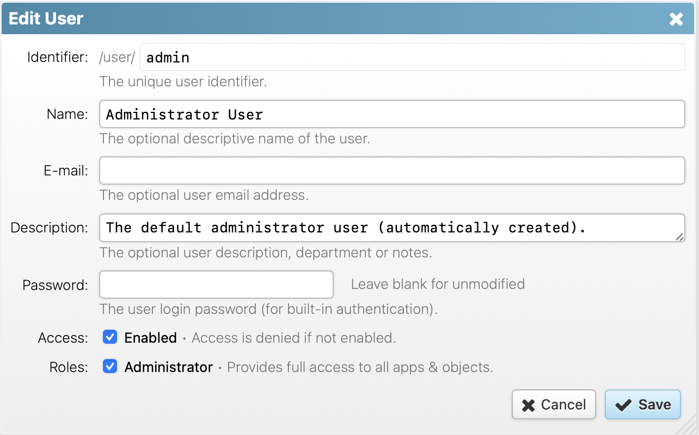

3. Administration & Security
3.1. Storage & Local Changes
The RapidContext storage is located in the plugin subdirectory
on the server. There all installed plug-ins are saved as packed ZIP files
along with the special local directory.
The local directory contains the special local plug-in
that stores any local additions or modifications. These local changes always
have priority over other plug-ins. The figure below illustrates the server
storage file structure:
-
plugin/
- cmdline.zip — The command-line plug-in
- http.zip — The HTTP plug-in
- jdbc.zip — The JDBC plug-in
-
local/ — A plug-in with local modifications and additions
- connection/ — Connections added or modified
- lib/ — JAR files added (JDBC drivers)
- role/ — Roles added or modified
- session/ — Currently active sessions
- user/ — Users added or modified
- system.zip — The system or core platform plug-in
3.2. Default Users & Roles
The default installation of RapidContext contain the following users and
roles:
- admin (user) — Created if no other
users are detected on server startup. The password is initially set to
accept any value (an empty string). The user is also assigned the
admin role. It is good practice to either disable this user
or assign it a proper password.
- admin (role) — A built-in role that
provides full system access, everywhere. This role is required in order
to modify procedures, manage plug-ins, and all similar administrative
operations. This role shouldn't be modified or removed
from the system. Instead, it should be assigned to users with care.
3.3. User Authentication
RapidContext require all users to authenticate with user name and password.
The following protocols for user authentication are built-in and supported
by default:
- HTTP Digest Auth — Uses a browser built-in login
dialog for user authentication. This method uses a challenge-response
protocol that avoids sending the password over
the wire. Even so, it is recommended to only use this authentication
method over secure channels (intranet, VPN tunnel or HTTPS).
After a successful authentication, a new session is initiated for the user.
The sessionid HTTP cookie is sent to the web browser and no further
authentication is required until the cookie expires or is invalidated. This
avoids repeated authentication requests.

Notice
A user session can be invalidated in one of the following ways:
- Session Expiry — Both the sessionid
cookie and the session itself is set to expire after 30 days.
- Logout — Users can logout from the user menu
(top right in the standard user interface).
- Forced Termination — The built-in procedure
System.Session.Terminate allows the early termination of
any user session.
- IP or Browser Mismatch — A session is bound
to the original browser user agent string and IP address in order to
avoid session hijacking. Whenever a mismatch occurs, the session is
terminated.
3.4. Managing Users
Users are managed with the built-in Admin app. Follow
the steps below in order to edit or create a user:
- Launch or go to the Admin app
- Choose the
Users
tab
- Select the appropriate user OR press the
+
icon
- Edit the user form (see screenshot for admin user)

- Press
Save
to store the changes
Notice
A few facts regarding user data storage:
- Passwords — Passwords are stored with a
one-way MD5 hash (with salt). This makes them virtually impossible to
retrieve without resorting to brute force and guesses. An
administrator can of course reset user passwords as needed.
- User Removal – Users can be removed by
deleting the corresponding file from storage, but this is
strongly discouraged. Use the
Enabled
checkbox in the dialog above instead.
3.5. Roles & Access Control
Access permissions are assigned to users from the roles
assigned. All platform operations for managing plug-ins or editing procedures
require the admin role, but access to other procedures is possible
to attain also from other roles.
Roles are currently created and modified directly on the server file system,
in the plugin/local/role directory. The role files should be named
[identifier].properties. See below for an example role file.
id = demo
type = role
name = Demo
description = Provides access to all read-only procedures (if properly named).
access.0.type = procedure
access.0.regexp = .*\\.Find[^.]*
The configuration for the access array requires some further
elaboration:
- access.#.type — The object type to match. Only the
procedure
and app
types are currently
used by the default access controls. Use the format
[plug-in identifier]:[type] for custom permission types and
generic access controls.
- access.#.name — The exact object identifier to match,
i.e. the procedure name. Either this property or the regexp
property must be specified. Use the name property when a
single unique object is to be identified.
- access.#.regexp — The regular expression to match the
object identifier. Either this property or the name property
must be specified. Note that the
.
character has special meaning
in regular expressions, so it must be escaped as \\.
to be used
literally.
- access.#.caller — The regular expression caller name
to match. If this property is specified, the procedure will only be
accessible when executed by the matched caller procedure. This is useful
for limiting access to generic helper procedures.
- access.#.allow — The access permission value, defaults
to true. The permission access list is processed in order,
so once an object matches an access list entry, the value of the
allow property will be returned as the permission check
result.
Notice
A few important notes on access control:
- Admin — It is currently not possible to manage
roles from the Admin app. This will change in a
future release possibly along with much of the current access control
model.
- Generic Access Controls — Since only apps and
procedures are checked by default, other objects must be checked
programmatically (from JavaScript procedures) by using the
System.User.CheckAccess procedure.
3.6. Security Checklist
Before installing a RapidContext server in a publically acessible location,
please check the following:
- Disable Default User – Make sure that the
admin user is either disabled or provided with a strong
password.
- User Passwords – Users should be encouraged to use
strong passwords to avoid risks with brute-force attacks or password
guessing.
- Encrypt Connections – Communication over the
Internet should be encrypted, since information can otherwise be
eavesdropped. Use an HTTPS proxy, an HTTPS servlet container or a VPN
tunnel.
- Verify Access Controls – Test the access controls
for each role with a test user assigned to only that role. Check that no
privileged resources are available to unprivileged roles.
- Limit Admin Access – The number of users with
the admin role should be limited, to avoid potential abuse
of the system.
Copyright © 2007-2012 Per Cederberg. All rights reserved.